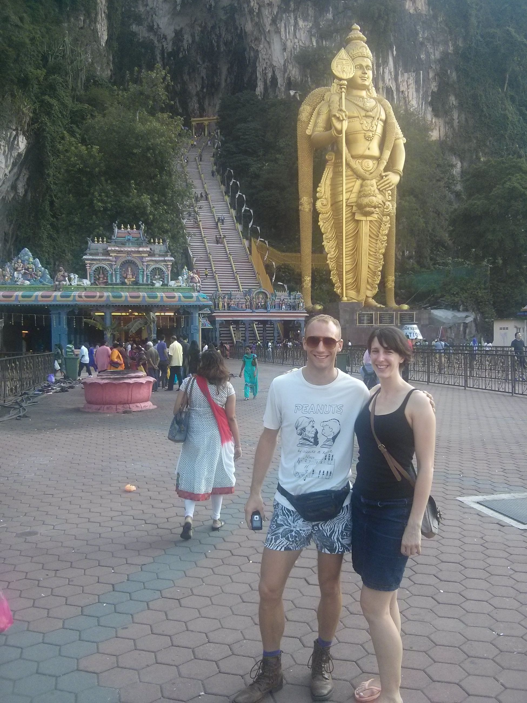
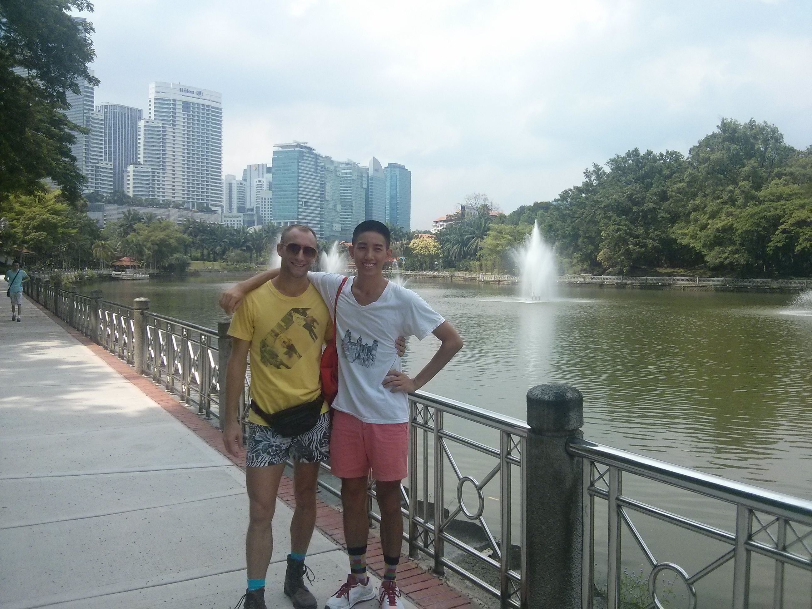
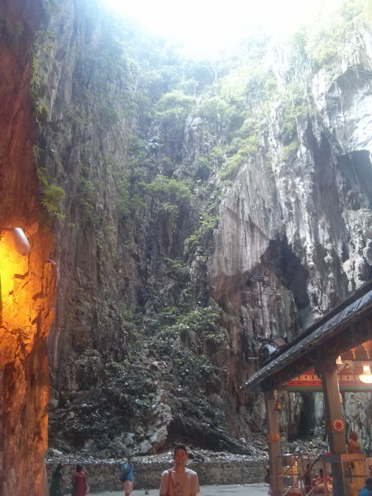
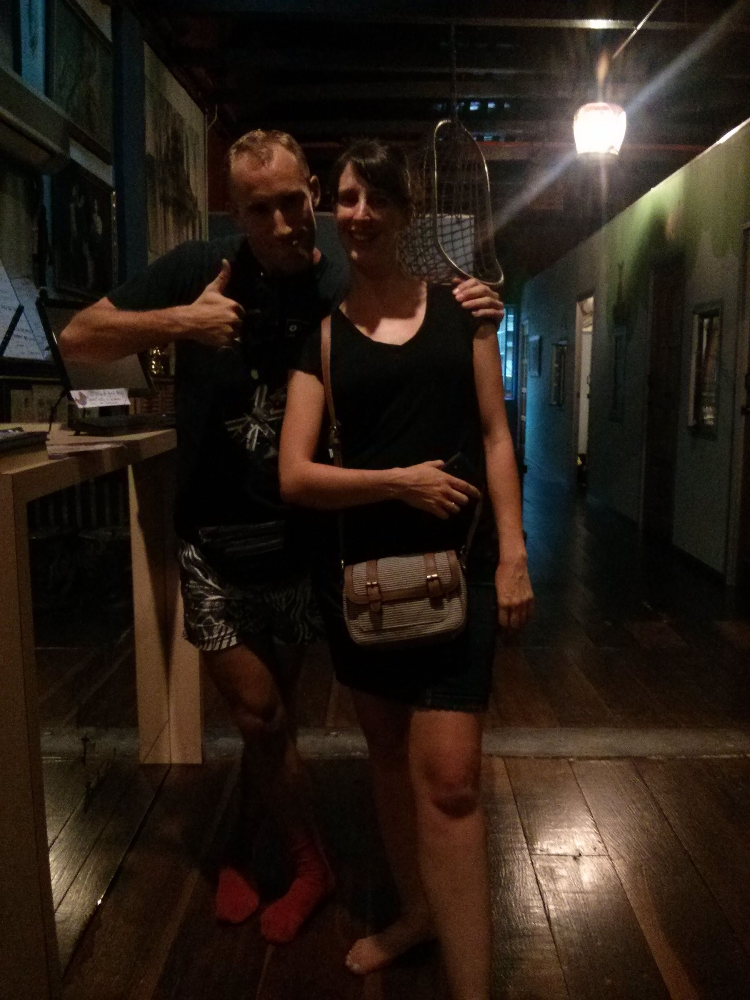
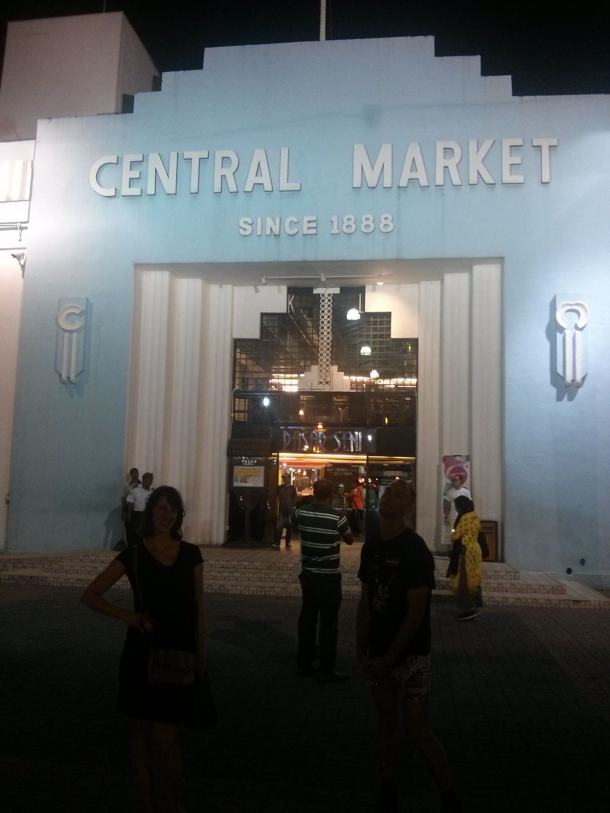
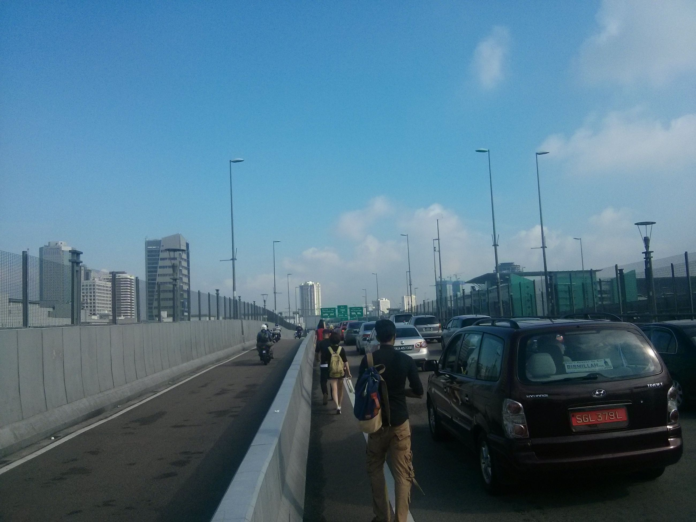

Jane, Thorin and I took a trip to KL for Easter weekend. As the blog's dated 2015-10-20, I can't believe it's been over 6 months, pushing 7. Time really passes by here
So we decide to take the bus from Larkin terminal on Johor side of Malaysia (the region closest to Singapore) at 0900 in the morning. Turns out, everyone and their second-cousin twice removed had the same idea. The traffic was so bad at the causeway over to Malaysia that we decided to walk across the freeway. We end up getting to Larkin at 1100. Oops. Lesson learned: never travel via Larkin terminal on a three-day weekend.
The Larkin bus terminal is nuts. There are at least 5 people or so constantly shouting cities in Malaysia to travel to: Kuala Lumpur (which they abbreviate KL in rapid succession, the inspiration for the title here), Melaka, etc. The best part is it's just like an 'open market' bus station. True Malaysian style-
We get there, go to the hostel, and then go around the Chinatown area. I tell you, tourists in southeast Asia are a strange breed. Besides the overabundance of elephant pants (somehow becoming O.K. after they go to southeast Asia, but never seen anywhere else in their hometown), they do a lot of sitting around and soul searching it seems. There was this one foreign man at one point balancing on his head, hair all done in dreadlocks, asking for money. Of course, it drew a crowd, but I'm not sure if it was because they were just concerned. I know I was.
Of course, we do the whole Petronas Tower run as well as the Chinatown bit. We also walk to the nearby park and square (names forgotten) and to the local botanical garden. The tourist area was H.A.F. (Hot as F) and crowded, but that was to be expected
The next day is topped off with a trip to Batu Caves where we see this huge Murugan statue. Filled with monkeys, and I'm not just talking about us.





Remember, do not travel via causeway on a 3 day weekend!!
